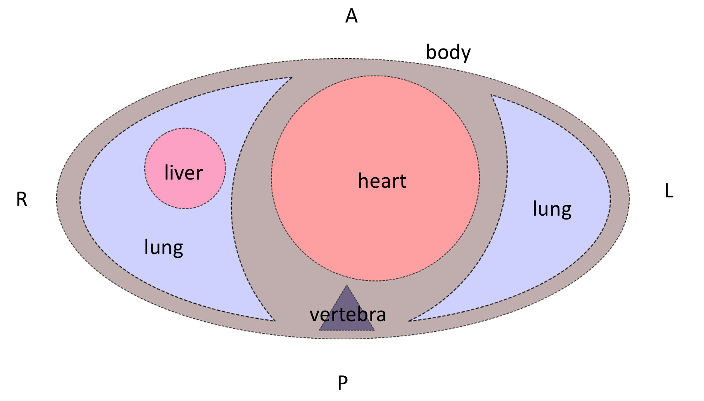

CT
121 minutes to read
Description of the Basic Principles of Computed Tomography Physics and Technical Considerations
There is also a Low dose chest CT protocol which is adopted rapidly in hospitals across the globe
A short description of the contrast-enhanced CT can be found on Wikipedia. And the detailed one - Contrast-enhanced CT
A good overview with many pictures can be found in the Basic principles of computed tomography slides
DICOM format
76 minutes to read
Most commonly, you can find CT data in the DICOM format. The only possible modality for the images is “CT” (for LDCT too).
As the CT study is a 3D scan of a patient, it’s possible to do a variety of reconstructions (both 2D and 3D). To distinguish initial CT scan images and reconstructions, the first value of the Image Type tag can be used. Note that this tag is optional, so it may not be presented in the file.
Now, let’s push aside the reconstructions and focus on the initial CT images (which in most cases are axial slices). The clinically significant reconstructions will be described in the Reconstructions section.
How to read the data
A CT study may contain several series, e.g., in contrast-enhanced studies 3-4 series are usually presented. Each series consists of many images (usually hundreds), called slices, because they “cut” the patient across. Here again (as in the Mammography chapter), we need to note that hypothetically, a single DICOM file can store multiple slices using the Multi-frame Module, but usually that’s not the case. However, ensuring one file corresponds to one slice is always a good idea.
Example: The (classical DICOM) files structure for a CT study with the two series.
└── 1.3.6.1.4.1.9328.50.4.0005 <-- patient's folder
├── 1.3.6.1.4.1.9328.50.4.4715 <-- study
│ ├── 1.3.6.1.4.1.9328.50.4.4716 <-- series
│ │ ├── 1-001.dcm <-- slice
│ │ ├── 1-002.dcm
│ │ ├── ...
│ │ └── 1-401.dcm
│ └── 1.3.6.1.4.1.9328.50.4.5094 <-- series
│ ├── 1-001.dcm
│ ├── 1-002.dcm
│ ├── ...
│ └── 1-379.dcm
└── 1.3.6.1.4.1.9328.50.4.5514 <-- study
So, to read a CT dataset, it’s required to walk recursively through all the files and read all of them. Then use information from the DICOM header of each file to get access to a full study or series.
Now is the best time to familiarize yourself with the set of Unique Identifiers (UIDs). The three UIDs worth noting regarding the CT modality are:
StudyInstanceUID - uniquely specifies the study
SeriesInstanceUID - uniquely specifies the series
SOPInstanceUID - uniquely specifies the slice
You can rely neither on the folder names to find slices belonging to one study/series nor on the file names of the DICOM file to get the right ordering of the slices. Moreover, there’s no guarantee that the slices’ file names will contain any numbering at all. The files can be stored in any arbitrary manner.
So, the only robust way to group the files into studies/series is to use the aforementioned UID tags.
Warning
It was found that in studies acquired by the TOSHIBA devices, another tag should be taken into account. It’s possible that the slices with the same SeriesInstanceUID would de-facto correspond to the different series, for which the AcquisitionNumber tag should be different. BUT as this tag is of Type 2 (Required, Empty if Unknown), you should be careful with such images.
To learn how to read the DICOM file itself, please refer to the recommendations in the Medical imaging -> Exercises section.
Series preprocessing
Now, when you have a complete series, the slices should be ordered according to their spatial position — so the images would go successively from the top to the bottom.
To sort CT images the Image Position Patient tag is used. For now, we are only interested in the Z-axis of this tag — it goes from the patient’s feet to the head. So, in order to get the right ordering, we just need to sort the slices descending by the 3rd (Z) value of the tag.
What all these numbers mean will be described shortly.
Slice preprocessing
If you are not familiar with the DICOM LUT (LookUp Table), please refer to the first part of the General Purpose X-ray -> Typical image preprocessing section.
The general formula for the DICOM CT preprocessing is the following:
Note
nice_looking_image = windowing( orientation_correction ( Modality_LUT(pixel_data) ) )
Each function in the formula is described separately below.
Modality LUT
In case of CT images, Modality LUT is used to get Hounsfield Units from pixel values
In case of CT images, there’s no tag named “Modality LUT”. The RescaleSlope and RescaleIntercept tags are used instead. These two tags define the linear transformation which maps the raw pixel values to the HU
But anyway, to apply this transformation the same Pydicom apply Modality LUT function can be used
Note
The result of this transformation is an image with pixel values in HU. This means that each value has a very clear interpretation. And this holds true for any manufacturer, scanner, patient, reconstruction, projection, etc.
This property makes CT very comfortable to use for deep learning because it allows mitigating an issue, known as a domain shift. Of course, it doesn’t solve it completely (e.g., the differences between CT and LDCT are still an issue), but it helps a lot.
Orientation correction
The orientation correction step is somewhat more complicated.
First of all, please take a look at the Patient Orientation normative.
To understand the meaning of the tags in the Image Plane module please read the Getting Oriented using the Image Plane Module article.
Typically, DICOM-viewers use this module only for setting the right orientation-description letters in the slice. But as we are going to train the models, we need to transform the images to look consistently — i.e. medically meaningful (correct organs location and view from feet).
Let’s have a look at the Image Orientation Patient tag. It is stored in the following format:
Note
ImageOrientationPatient = [row_x, row_y, row_z, col_x, col_y, col_z],
where:
first 3 values — direction cosines for rows,
second 3 values — direction cosines for columns.
Usually, CT scanners produce strictly axial slices, so the possible values in the Image Orientation Patient tag can be only {1, -1, 0}. However, modern scanners’ gantry can be tilted within a certain range, which would lead to other values in the Image Orientation Patient tag. Gantry tilt is used mostly for heart CT which is a whole new world. Sometimes it’s also used for head CT, but this is rather a rare case. So, we will not cover these somewhat exotic cases in this chapter.
We want the image to look like its Image Orientation Patient tag is [1, 0, 0, 0, 1, 0]:
To do so, a combination of 90-degrees rotations and vertical/horizontal flips should be applied to the image.
After these transformations, the patient slice will be oriented like the patient is laying on the scanner table supine. But the table can be at the side or at the top of the image.
Depending on the task you are solving it may or may not be a problem for the model. Anyway, it most probably would be a problem for the doctors, because they usually look at the images which are also oriented according to gravity (when scanner table is located at the bottom of the image). To apply this final orientation transformation the Patient Position tag is used. It describes the patient’s position according to the scanner using specified in DICOM standard abbreviations.
The Head First and Feet First slices are oriented similarly, so the latter letters of the Patient Position tag should be taken into account. Rotate the slice to be orientated according to gravity, if you need to. Be it for solving the task or just for visualization purposes.
An overall formula for the orientation correction step is the following:
Note
correctly_oriented_image = PatientPosition[optional]( ImageOrientationPatient(pixel_data) )
There are plenty of nuances in the orientation correction procedure. Please refer to the example orientation correction Jupyter Notebook to understand it better.
Windowing
So-called Windowing is the procedure that is used to increase the visual contrast of certain tissues. As you already know, after the Modality LUT transformation, the CT image pixel values are in the HU. The HU scale starts from -1000 (air) and ends around 30000 (gold, steel, and brass), so the HU image is usually stored using the int16 data type. This is a fairly wide scale. But the human eye can percept only 700-900 grey levels (scroll down to the Conclusions right away), and a few dozen levels if the pixels are adjacent. This is why for a radiologist to be able to see different tissues effectively, a certain range of HU values is taken, and then it’s visualized.
To get details of the windowing procedure please see this radiopaedia article and this overview, which has great example images of the different windows applied.
Also, please watch this short explanation video of the windowing procedure for the radiology students.
In the DICOM file, the parameters for the windowing procedure are stored in the VOI LUT module. The actual windowing parameters can be stored either in the Window Center and Window Width tags or in the VOI LUT Sequence tag.
Warning
Multiple windows can be stored in the VOI LUT Sequence.
The good news is that we still can apply windowing transformation to the CT image with the same Pydicom apply_voi_lut function. Please note the index parameter.
Note
Using this function, by default the Window Center and Window Width tags will be ignored if VOI LUT Sequence is present,
You can play with different windows using the sample image from the orientation correction example Jupyter Notebook.
NIfTI format
116 minutes to read
You are already familiar with the NIfTI format (refer to Medical Imaging -> NIfTI section if not).
The main difference between DICOM and NIfTI is that the raw image data in NIfTI is saved as a 3D image, while in DICOM you have 2D images (slices).
In case of CT studies, NIfTI files will contain the entire series (all of its slices). The file contains very much less metadata than the DICOM files. Unlike in DICOM, the NIfTI header is limited in bytes. NIfTI header contains metadata describing the 3D image and its parameters, required for the correct 3D array transformation to the meaningful volume.
It’s not always the case that the transforms are described as affine transformations, it can be in the form of quaternions or just a set of transformations.
NIfTI files use a different coordinate system than the DICOM. To understand this coordinate system please read the Coordinate systems and affines article.
NIfTI files can include time series (e.g., for fMRI studies), but it’s not very common, and it is not used in CT studies. So, we will not consider such cases in this chapter.
The list of the tags can be found in the Working with NIfTI images tutorial. It also describes how to use information from these tags to apply the transformations to the raw volumetric data.
Official NIfTI documentation also provides a great FAQ.
Image formats
1 minute to read
That’s a pretty rare case for CT images, but sometimes you can find such datasets. In that cases, the only meta-information you have is what the dataset authors provided.
The general recommendation would be to avoid image-typed CT datasets. But if there’s no choice, please see the General Purpose X-ray -> Image formats section for the details on how to preprocess such images.
Volume preprocessing
8 minutes to read
Depending on the approach used for solving a task, you can apply volumetric preprocessing or not. For instance, if you are going to train a slice-wise model, maybe you don’t need to build volumes from the slices. But if you are going to use a 3D-model, you will need to transform all of your series into a homogeneous volume.
The most commonly used volumetric preprocessing is just a 3D interpolation into a homogeneous grid of a pre-defined density. Usually, Trilinear Interpolation is used (because it is fast), but you may consider using other types of 3D-applicable interpolations (like the Tricubic or Spline ).
For DICOM files, to reconstruct an image with the correct aspect ratio, you’ll need the following tags:
Interpolation functions are available in the Python libraries:
For the NumPy arrays, you can use the Regular Grid Interpolator from the SciPy library.
If you are working with NIfTI data, you can use native NiBabel functionality.
You may also consider using PyTorch interpolate function.
When the volume is preprocessed, you can split it back into slices if you need to (e.g., for the task or visualization purposes).
Reconstructions
7 minutes to read
Different kinds of reconstructions can be done with the CT data. They are used by clinicians to better understand and describe the patient’s conditions.
Usually, all the reconstructions described below, are already done on the scanner workstation, and you rather will need to filter them out, or just pick and use them.
But still, when the complete series volume has been built, you can do the reconstructions yourself if you need to.
2D
Multi-Planar Reconstruction (MPR)
Multi-Planar Reconstruction is a technique to build the slices across other than the original, in case of CT – axial, dimension. Usually, it’s strictly coronal and sagittal projections.
To build them from the preprocessed volume, you just need to pick the planes from the volume across the corresponding dimension.
If you need to visualize the volume from the raw (not preprocessed) volume built from DICOM files, you may use scaling at the visualization step.
In case of NIfTI files, you’ll need to use the transformation tags as it’s described in the CT -> Volume preprocessing section. Again, you may want to pick the planes across the different dimensions of the preprocessed volume or do the transformation only at the visualization step.
Also, when you have all the required parameters to do the volumetric transformations, you can reconstruct a plane that cuts the volume at arbitrary angles (resulting in an oblique projection). In this case, you’ll need to do a trilinear interpolation to build the desired plane image. You may use the same Regular Grid Interpolator from the SciPy library.
Though these reconstructions are used regularly in the clinical settings for patient diagnosis, they are usually not needed for the model training.
Maximum Intensity Projection (MIP)
Maximum Intensity Projection is a technique that is done by projecting maximum intensity values of the volume to the 2D plane.
Usually, the MIP is built not from the entire volume, but a certain part of it.
Examples:
for lungs nodule detection: the entire volume is split into several blocks across the vertical axis, and then, again vertical, MIPs are built for each block
for cerebral arteries visualization: the box inscribed in the patient’s skull is taken, and then MIPs are built from different angles within a certain range and with a certain step resulting in a set of MIPs imitating a flyby around the vessels
Such projections are rarely used for model training, but in some special cases, they can be useful.
It’s easy to build MIPs across the existing dimensions (lungs example). But if you’re going to project a volume on the plane at an arbitrary angle (arteries example), you again will need to use interpolation.
The topic of building such projections lies rather in the domain of Computer Graphics than in Medical Imaging, so we’re not going to describe the exact technique here.
3D
When the volume is built, it can be visualized. Windowing can be applied to the volume as well. Also, modern workstation software and desktop viewers can further process this volume:
remove parts of the volume - e.g., remove outer tissues to get a view of the internal structures
automatically remove bones (doesn’t work really well, especially if the study is contrast-enhanced)
automatically build carotids tree
These 3D reconstructions and processing result in very beautiful images, that can be saved, e.g., in the DICOM file alongside the original data, or otherwise. In the vast majority of cases, the medical value of such images is vanishingly small. And they are almost never saved or used.
Again, the exact technique for 3D visualization is a topic of Computer Graphics, and will not be covered here.
How to split the data
1 minute to read
The general recommendations are the same as for the General Purpose X-ray images. But for CT studies there can be several series for each patient (CT image also has a PatientID tag).
So, to split the DICOM CT dataset you need to read all the files’ headers, aggregate the slices into series, group them by patients, and then make a split by patients.
Unlike in DICOM, a NIfTI file contains no information about the patients, but you can split your data by series just by splitting the file index (one file contains one series). However, it may not be a trivial task to split the NIfTI dataset by the patients if no external (outside of the NIfTI files) annotations are provided.
Exercises
10 days of work
Note
Please focus on data preparation and do not experiment extensively with the models. The purpose of these tasks is to learn how to read and preprocess the CT DICOM and NIfTI data. That is why you’re asked to invent your own pipeline and write the code from scratch. Such an approach definitely requires more time, but it also leads to a deep understanding of the data formats and CT modality peculiarities.
Task 1: Classification
Solve the task posed in the RSNA STR Pulmonary Embolism Detection challenge.
Do not reproduce the winner’s solutions right away - compare your approaches to the winner’s later on
What approach will you choose: slice-wise or 3D?
The dataset size is almost 1 TB consider using a part of it (e.g., if your disk space is not enough or training takes too long)
If you’re going to pick a subset of the data, do it in a smart way
Task 2: Segmentation
Solve the task posed in the COVID-19 Lung CT Lesion Segmentation Challenge - 2020.
Try a slice-wise approach (2D/2.5D)
Try a 3D approach
Compare the speed and quality of the two (or more) approaches
How can we improve the model’s prediction quality? Think about what other medical knowledge (and corresponding models) we can use.